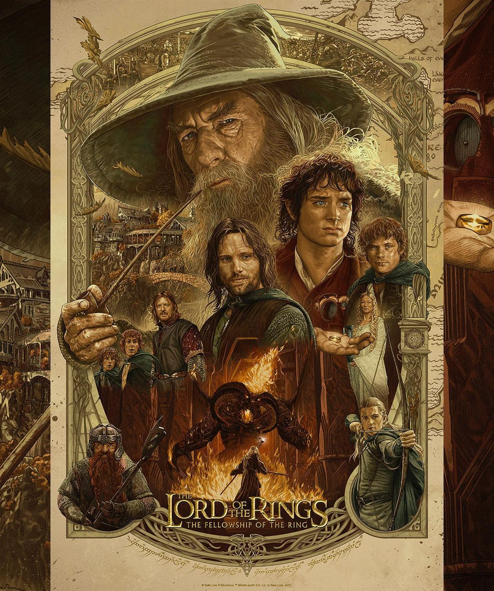

Merhaba, adım Uğur. İzmir'de yaşıyorum. Kodluyoruz Front-End Patikasında çalışıyorum.
Yazılıma karşı içimde çok büyük bir istek ve ilgim var.
Her gün düzenli olarak çalışıyorum. Başarılı olacağıma inancım tam.
Kitap okumayı, film izlemeyi ve oyun oynamayı çok seviyorum.
John Ronald Reuel Tolkien'in yazdığı Yüzüklerin Efendisi adlı fantastik edebiyat serisinden uyarlanarak çekilmiş Yüzüklerin Efendisi: Yüzük Kardeşliği, Peter Jackson'ın yönettiği Yüzüklerin Efendisi üçlemesinin birinci filmidir ve 2001 yılında gösterime girmiştir.
